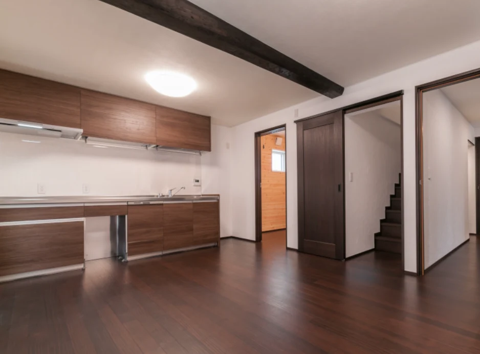
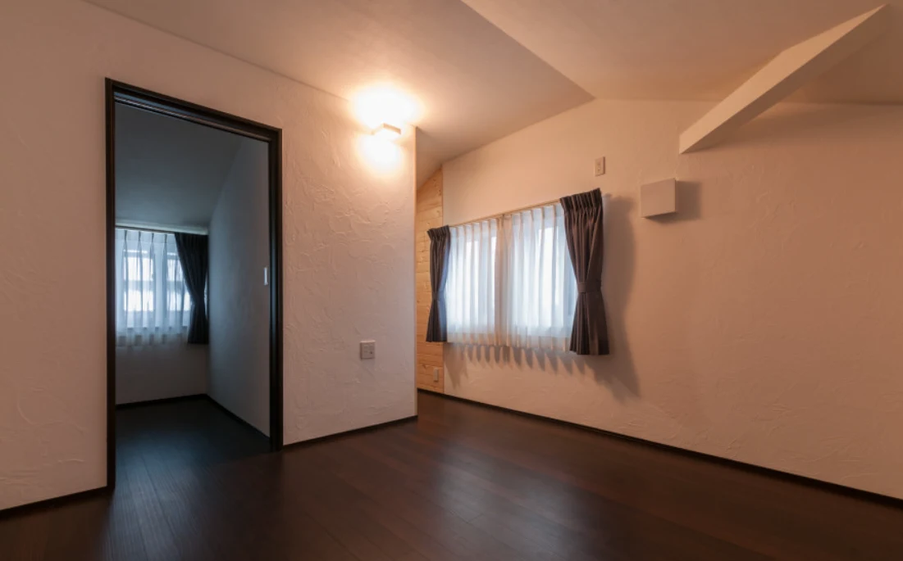
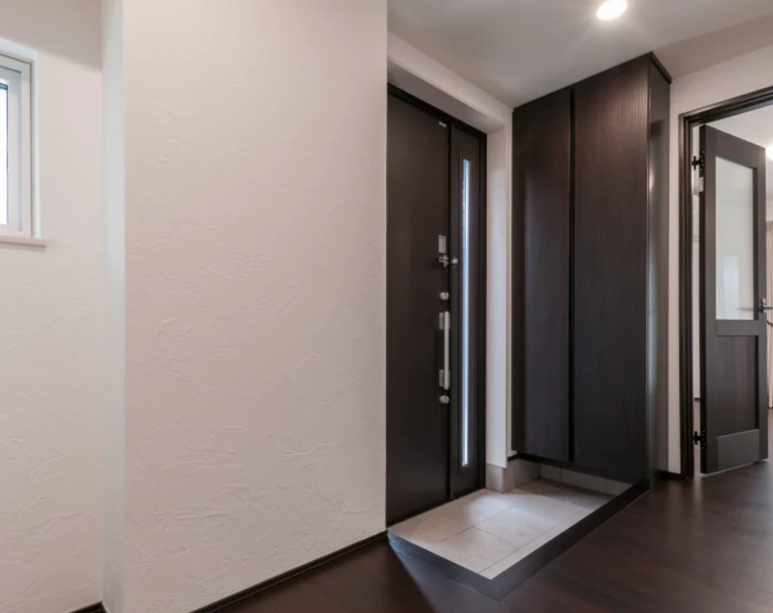
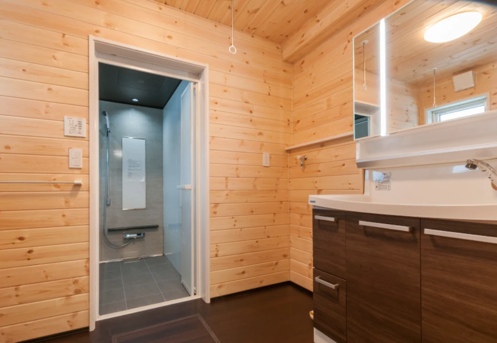
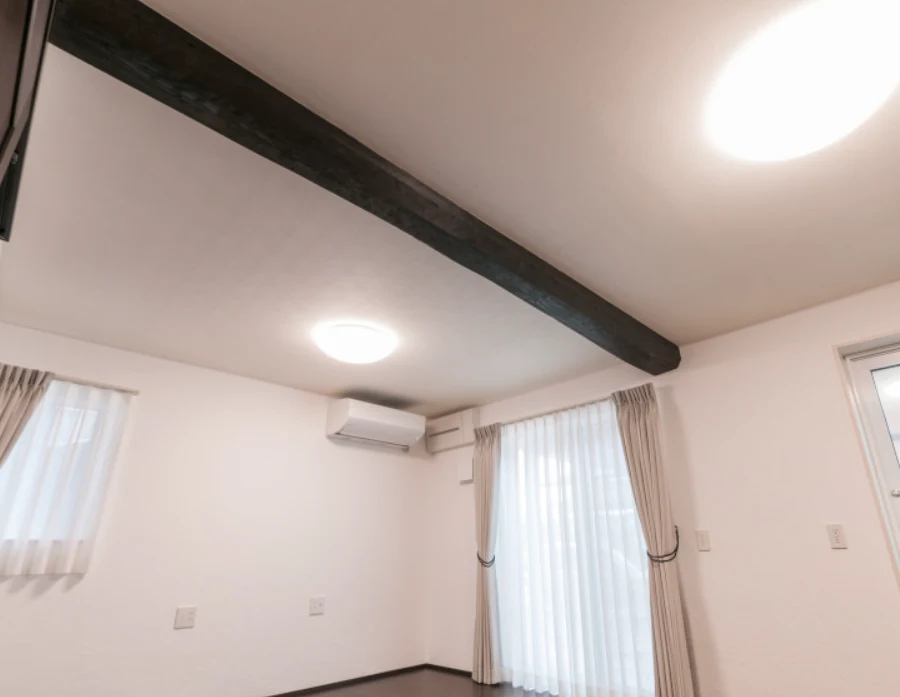
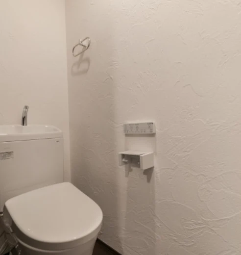

イベント情報
高岡市・全面漆喰と無垢材
2階建ての完成見学会
この見学会は終了しました
詳しいご案内
日程・価格・募集内容などは、掲載当時の情報です。
この見学会は終了しました
完全予約制
天然素材の家を体感する
天然素材の家を体感する
完成見学会
全面漆喰・無垢の木の住まいをご覧ください
開催日
3/15(日) ・ 3/31(火)
時間
10:00 〜 16:00
見学会のご案内
この度、お施主様のご厚意により、完成したばかりの住まいを
期間限定で公開させていただくことになりました。
天然素材の心地よさを、ぜひ五感で感じてください。
イベント詳細
| 開催日時 | 2026年3月15日(日) ・ 31日(火) 10:00 〜 16:00（最終受付 15:30） |
|---|---|
| 会場 | 富山県高岡市 ※ ご予約後に詳しい住所をご案内いたします。スタッフがお客様のご自宅まで直接お迎えにあがります。 |
| 構造・規模 | 2階建て3LDK |
| 仕様 | 全面漆喰塗り壁 ／ 無垢杉フローリング ／ 高気密・高断熱 ／ 耐震等級3相当 |
| 参加費 | 無料（完全予約制） |
| 送迎 | スタッフが直接お迎えにあがりますので、会場への道順のご心配は不要です。 |
見どころ
漆喰の白壁と無垢材の温もりが調和する、
こだわりの空間をご覧いただけます。

開放感あふれるLDK





この家の3つの見どころ
全面漆喰の壁
調湿・消臭・抗菌効果に優れた漆喰を全面に使用。一年中快適な室内環境を実現します。
無垢材の温もり
杉の無垢フローリングは素足で歩くと心地よく、お子様が安心して遊べる空間です。
耐震等級3相当
最高等級の耐震性能で、大切な家族の安全を守ります。富山の気候にも最適な構造設計。
見学会当日の流れ
お迎え
ご予約いただいた日時に、スタッフがお客様のご自宅（またはご指定の場所）までお迎えにあがります。
受付
会場到着後、受付をお済ませください。手袋・スリッパをご用意しております。
自由見学
天然素材の質感、漆喰の壁、無垢材の香りをじっくりとご体感ください。写真撮影もOKです。
スタッフによるご説明
素材の特徴、間取りの工夫、仕様の詳細などをスタッフがご説明いたします。お気軽にご質問ください。
個別ご相談（任意）
家づくりについてのご相談を承ります。資金計画や土地探しについてもお気軽にどうぞ。
オンライン見学も対応しております
お仕事やご予定で現地に来られない方のために、
Zoomによるオンライン見学会も開催しております。
ご自宅にいながら、お部屋の雰囲気をご体感いただけます。
スマホでOK
スマートフォンやタブレットがあれば、特別な準備は不要です。
日時自由
開催期間中、ご都合の良い日時をご相談いただけます。
その場で質問OK
間取りや素材、費用のことなど何でもお気軽にどうぞ。
Zoomオンライン見学のご案内
| 対応日時 | 開催期間中、ご都合の良い日時をご相談ください |
|---|---|
| 所要時間 | 約30〜45分 |
| ご用意 | スマートフォン・タブレット・PC いずれか（Zoomアプリ推奨） |
| 参加費 | 無料 |
| ご予約 | お問い合わせフォーム・お電話・LINEにて 「オンライン見学希望」とお伝えください |
ご来場にあたってのお願い
- 完全予約制となります。事前にお電話・お問い合わせフォーム・LINEよりご予約ください。
- スタッフがお迎えにあがりますので、会場への道順のご心配は不要です。
- お施主様のお住まいのため、室内の取り扱いにはご配慮をお願いいたします。
- 小さなお子様連れでもお気軽にお越しください。キッズスペースをご用意しております。
- ご来場が難しい方は、Zoomによるオンライン見学もご利用いただけます。
- 当日のお問い合わせは 0800-200-2661 までお電話ください。
今後の見学についてご相談ください
天然素材の心地よさ、漆喰の質感を、
ぜひ実際にご体感ください。
現地見学・オンライン見学ともにお気軽にどうぞ。